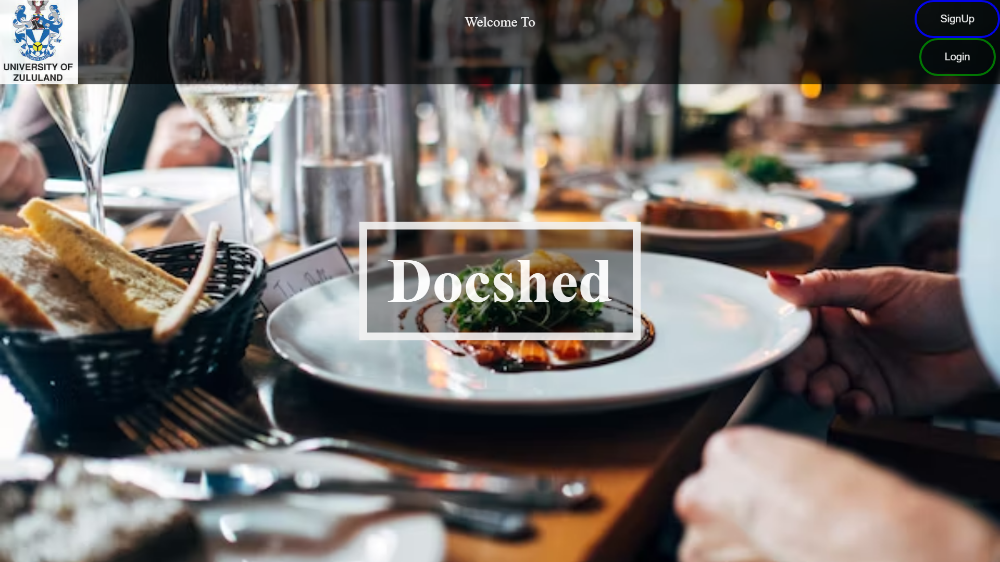

Hello, and welcome to my portfolio! I am Luyanda, a passionate and dedicated computer scientist and statistics enthusiast. Throughout my academic journey, I have pursued a double major in Computer Science and Statistics, driven by my curiosity to explore the intersection of these two dynamic fields. This portfolio aims to showcase my accomplishments, projects, and skills that highlight my expertise as a data-driven problem solver and a technology enthusiast.
Skills:
Programming Languages
Python
Java
R
HTML
Javascript
CSS
Dart
Data Analysis and Visualization
Pandas
NumPy
Matplotlib
Machine Learning
Scikit-learn
TensorFlow
Keras
Regression
Classification
Clustering
Statistical Methods
Hypothesis Testing
Bayesian Inference
Time Series Analysis
Database Management
SQL
Software and Tools
Jupyter Notebook
Git
Excel
Firebase
VS Code
Beautiful Soup
Problem Solving
Algorithms
Data Structures
Optimization
My Projects
click on images for Slideshow

Wine Pairings System
In my first project during the second semester of our second year,
we were given the exciting opportunity to create and design a web application for our university's consumer department.
The primary objective of the web app was to assist our campus restaurant's waiters with wine pairing recommendations.
Our focus was on optimizing the design for small devices and tablets,
ensuring that the waiters could easily use the application while carrying it around in their day-to-day tasks.
By leveraging responsive web design techniques, we aimed to create a user-friendly interface that adapts seamlessly to various screen sizes,
providing an excellent user experience on both small and medium-sized devices.
"Campus Buddy" is a cutting-edge mobile application tailored to enhance the academic journey for students. With a wide array of features, it serves as the ultimate companion to streamline various academic tasks and improve the overall student experience. Key functionalities include class scheduling, ensuring students can effortlessly manage their schedules and make timely updates. The app also provides access to exam seating plans, relieving students of the stress of finding exam venues on important exam days. Additionally, it offers detailed campus maps and navigation assistance, simplifying the exploration of the campus, including locating buildings, facilities, and departments. The application further boasts an advanced chatbot with natural language processing capabilities, enabling students to seek quick and evolving assistance for various academic queries.
AWS server
Flask Web Server: The project is built on the Flask framework, creating a web-based platform for user interaction.
Chatbot Index: It constructs a chatbot index that uses the GPT-3.5 model for generating responses. The index is created from documents stored in a specified directory, allowing the chatbot to provide context-aware responses.
API Endpoints:
/api/chatbot: Accepts user input via JSON, processes it through the chatbot, and returns responses in JSON format.
/get_progress: Provides information about a global variable named progress in JSON format.
/scrape: Initiates a web scraping operation, updating something, and returns success or error messages in JSON format.
Web Routes: The project includes several web routes for rendering HTML templates, covering main, timetables, exams, seating plans, and a homepage.
File Upload Functionality: Two routes are available for uploading files, one for seating plans and another for exam timetables.
.png)

.png)


.png)
.png)
.png)
.png)
.png)
.png)